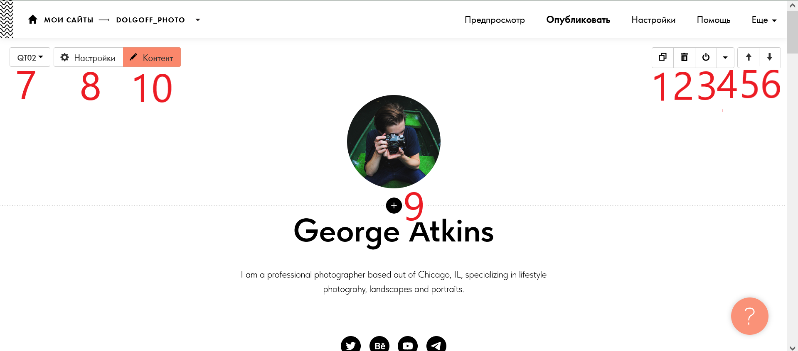

Блоки и их редактирование

Кнопки справа блока: с двумя квадратами называется дкблирование,она создаёт точную копию блока. с корзиной - удаляет блок. с кнопкой включения выключения- делает блок видмым(если не активировано) или не видимым(если активирована). стредка вверх поднимает блок на один уровень вверх,а вниз = опускает на один уровень вниз, если нажать на плюч в нижней части блока,то будет создан новый блок (Для дальнейших инструкций нажмите на стрелочку в правой области экрана)